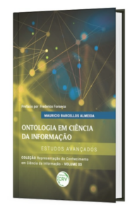
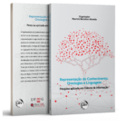

Livros Publicados
Recensão do prof. Jorge Revez, da Universidade de Lisboa sobre a Coleção Representação do Conhecimento em Ciência da Informação disponível aqui.

ALMEIDA, M.B. (2024). Ontologia na prática: Projeto, Metodologia e Construção. Curitiba: CRV, 183p. Coleção A prática da ontologia aplicada, Vol.1.
Leia mais sobre o livro aqui
ALMEIDA, M.B. (2025). Ontologia na prática: Projeto, Metodologia e Construção. Curitiba: CRV, 183p. Coleção A prática da ontologia aplicada, Vol.2.
Leia mais sobre o livro aquiALMEIDA, M.B. (2020). Ontologia em Ciência da Informação: Teoria e Método. Curitiba: CRV, 377 p. Coleção Representação do Conhecimento em Ciência da Informação, volume 1.
Leia mais sobre o livro aquiLer CAPÍTULO 1 AQUI
ALMEIDA, M.B. (2021). Ontologia em Ciência da Informação: Tecnologia e Aplicações. Curitiba: CRV, 372 p. Coleção Representação do Conhecimento em Ciência da Informação, volume 2.
Leia mais sobre o livro aquiLer CAPÍTULO 2 AQUI
ALMEIDA, M.B.; EMIGDYO, J.L. (2022). Ontologia em Ciência da Informação: Curso completo com teoria e exercícios. Curitiba: CRV, 168 p. Coleção Representação do Conhecimento em Ciência da Informação, volume suplementar (para professores).
Leia mais sobre o livro aqui
ALMEIDA, M.B. (2023). Ontologia em Ciência da Informação: Estudos Avançados. Curitiba: CRV, 375 p. Coleção Representação do Conhecimento em Ciência da Informação, volume 3.
Leia mais sobre o livro aquiLer CAPÍTULO 3 AQUI

ALMEIDA, M.B. (Org.) (2019). Representação do Conhecimento, Ontologias e Linguagem: pesquisa aplicada em Ciência da Informação. Curitiba: CRV, 2020. 304p. (e-book).
Leia mais sobre o livro aqui